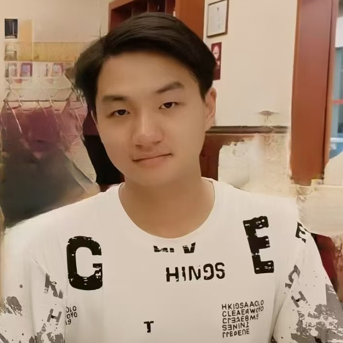
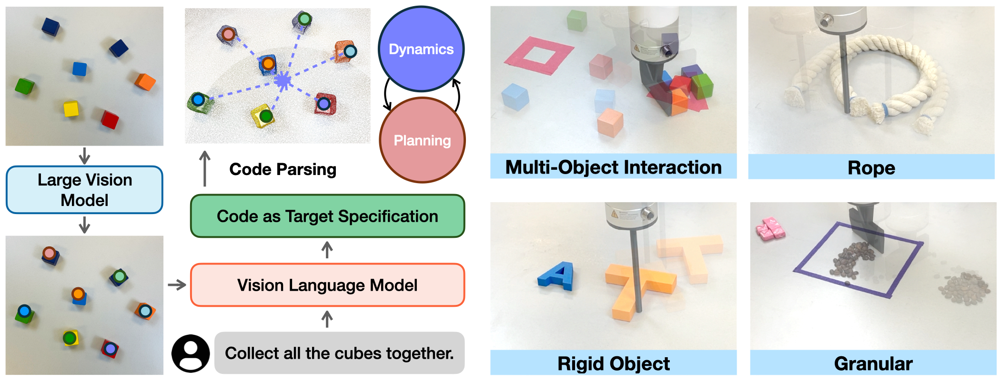

|
Zixian Liu I am currently an undergraduate student in Yao Class, Tsinghua University. Previously, I was a research intern at Shanghai AI Lab, supervised by Prof. Ziwei Liu. I was fortunate to work with Prof. Yunzhu Li at UIUC and Prof. Huazhe Xu at Tsinghua University. |
 |
{kind=link}
ResearchI am interested in 'spatial intelligence' and 'physical intelligence'. Specifically, I am interested in the following questions: 1. How can models perceive, understand, and reason in 3D space?2. How to equip models with physical common knowledge, and finally have them engage in the real world? |
Preprints |

|
OnlineSI: Taming Large Language Model for Online 3D Understanding and Grounding
Zixian Liu, Zhaoxi Chen, Liang Pan, Ziwei Liu arXiv, 2026 Project Page / arXiv / Code We introduce OnlineSI, a framework designed to understand 3D scenes in an online fashion and make detections from streaming video. |
Publications |
|
 |
KUDA: Keypoints to Unify Dynamics Learning and Visual Prompting for Open-Vocabulary Robotic Manipulation
Zixian Liu*, Mingtong Zhang*, Yunzhu Li ICRA, 2025 Best Paper Finalist (top 10%) @ CoRL 2024 Workshop Project Page / arXiv / Code KUDA is an open-vocabulary manipulation system that unifies the visual prompting of vision language models (VLMs) and dynamics modeling with keypoints. |
Last updated: 2026-03-10